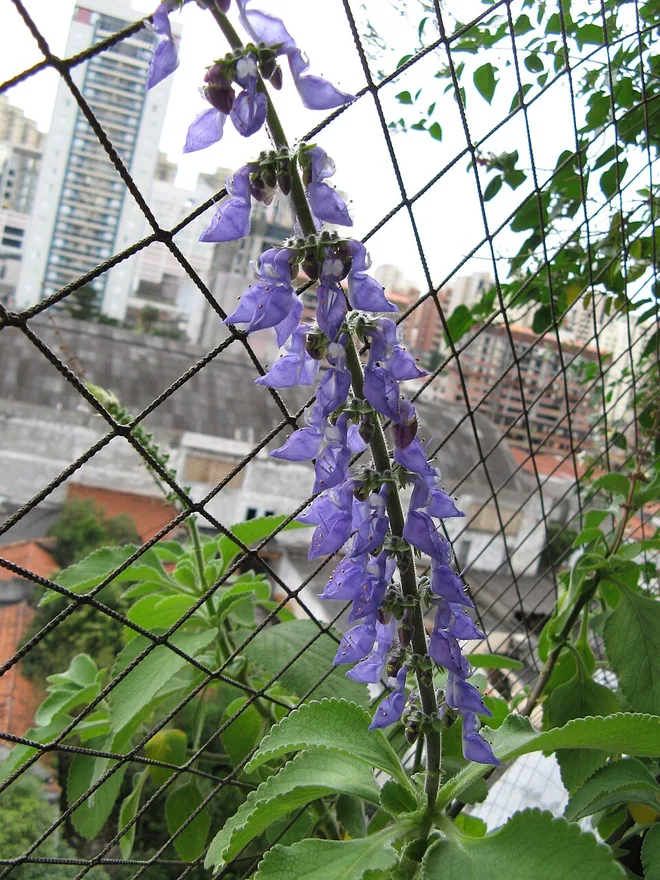
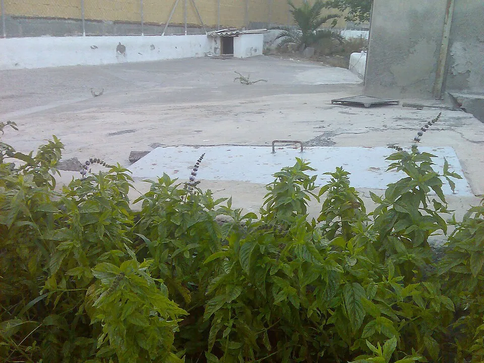
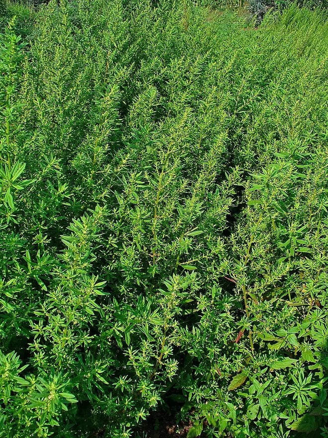
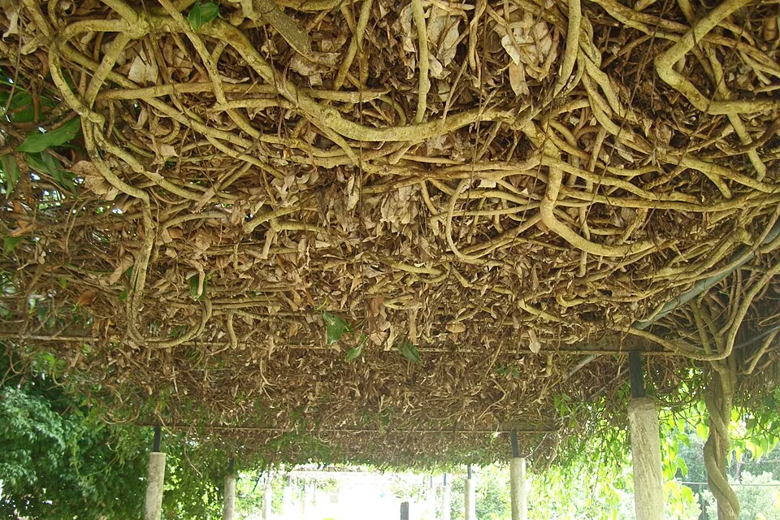
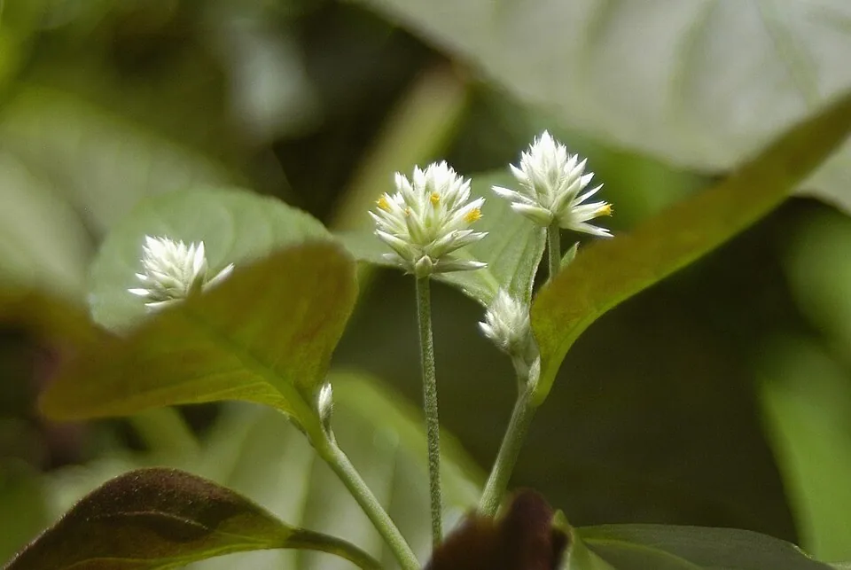
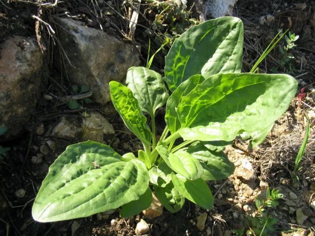
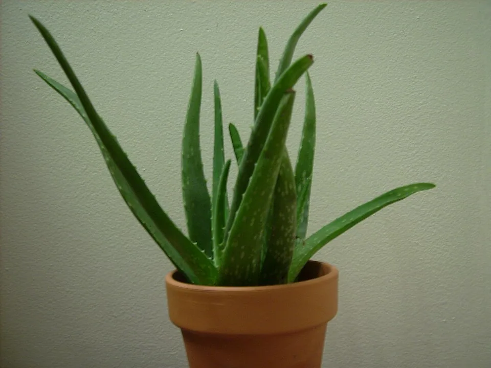
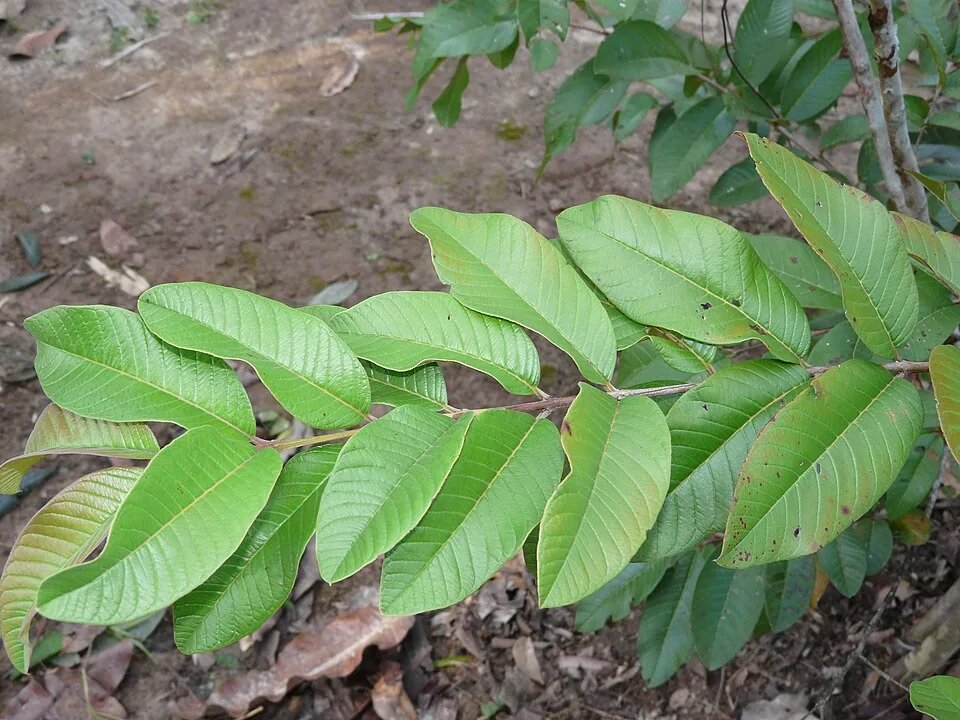

O conhecimento sobre o território não está apenas nos livros. Ele também aparece nas conversas de família, nos quintais, nos caminhos da comunidade e no trabalho de quem conhece as marés. Esta leitura nasce de um material pedagógico sobre biodiversidade das ilhas e convida a aproximar a observação comunitária da pesquisa científica.
Os exemplos reunidos abaixo são temas de estudo, não um inventário botânico confirmado de Piaçaguera. Onde houver informação regional, ela será identificada como tal. Relatos de moradores, fotografias e identificação de espécies precisam ser registrados e verificados antes de se afirmar uma ocorrência local.
Plantas medicinais: o que os quintais ensinam
Em comunidades do litoral, o conhecimento sobre plantas circula entre gerações, associando folhas, cascas, cheiros e práticas familiares aos cuidados cotidianos. A pesquisa escolar registra essa medicina popular como patrimônio de saberes, especialmente relevante onde o acesso a serviços de saúde é difícil. Os nomes populares podem variar, e uma mesma palavra pode identificar espécies distintas.

Boldo
Quintais e preparações tradicionais
Na pesquisa da professora, o boldo é lembrado como planta de quintal associada ao alívio popular de má digestão e desconfortos após refeições pesadas. O texto também registra sua relação tradicional com o fígado, retenção de líquidos e a ideia de “desintoxicação” após excessos de comida ou bebida. Essa última ideia pertence ao repertório popular: chás não neutralizam o álcool nem substituem cuidados de saúde. Diferentes espécies podem receber o nome de boldo.
Memória e curiosidade: No material original, o boldo aparece ligado à memória dos cuidados digestivos e à expressão popular “limpar o organismo”.

Hortelã
Aroma, cultivo e memória
A hortelã aparece nas memórias de cuidados domésticos por seu aroma e por preparações populares associadas a indigestão, azia, gases e náuseas. O material também menciona seu uso tradicional para relaxamento, descanso, resfriados, congestão nasal e cuidados com o hálito. É uma planta com diferentes espécies e variedades; suas propriedades e limites não são necessariamente os mesmos.
Memória e curiosidade: O aroma da hortelã aparece tanto na alimentação quanto nos relatos de cuidado e acolhimento familiar.

Mastruz (erva-de-santa-maria)
Conhecimento popular e toxicidade
O mastruz, também chamado erva-de-santa-maria, é citado em práticas tradicionais ligadas a dores musculares, contusões, inchaços, picadas, feridas e ao combate popular de vermes. O documento menciona inclusive uma preparação caseira com leite, conhecida em algumas famílias. Esse registro é cultural, não uma sugestão de consumo: o mastruz pode causar intoxicações graves, sobretudo em crianças, gestantes e pessoas com problemas de saúde.
Memória e curiosidade: O uso tradicional do mastruz como vermífugo tem longa história, mas também apresenta risco real de toxicidade.

Guaco
Folhas e saberes sobre a respiração
O guaco é lembrado na medicina popular por preparações usadas quando há tosse, rouquidão, irritação de garganta e sensação de catarro acumulado. O texto escolar também relaciona a planta ao cuidado das vias respiratórias. Existem fitoterápicos padronizados de guaco com indicações específicas no SUS, mas isso não torna qualquer preparo caseiro equivalente a esses produtos nem substitui atendimento em situações de falta de ar.
Memória e curiosidade: O guaco aproxima saberes caseiros de uma planta também estudada na fitoterapia brasileira.

Penicilina vegetal
Um nome popular que pode confundir
Conhecida popularmente como penicilina vegetal, esta planta aparece no documento entre os saberes relacionados a dores de garganta, gengivite, aftas, pequenos machucados, espinhas, micoses e frieiras. São registrados usos tradicionais externos, inclusive na forma de gargarejos. O nome é uma comparação popular, não uma identidade farmacológica: não se trata do antibiótico penicilina, e a segurança de seu uso interno não está estabelecida.
Memória e curiosidade: O apelido “penicilina” mostra como nomes de medicamentos acabam incorporados à linguagem popular das plantas.

Tanchagem
Plantas dos caminhos e dos quintais
A tanchagem é mencionada na pesquisa por usos populares ligados a azia, refluxo, gases, cólicas e má digestão, além de cuidados tradicionais para irritações da boca e da garganta e pequenas lesões de pele. Suas folhas e espigas são importantes para a identificação botânica, pois o nome comum pode abranger espécies diferentes de Plantago. As indicações aqui representam práticas lembradas no território, e não uma recomendação terapêutica.
Memória e curiosidade: As espigas e as nervuras das folhas de tanchagem são pistas botânicas de identificação.

Babosa
Folhas suculentas e cuidados com a pele
A babosa faz parte de saberes populares sobre o gel das folhas, tradicionalmente associado a queimaduras leves de sol, irritações, coceiras, picadas, pequenos machucados e ao cuidado de pele e cabelos ressecados. O documento destaca seu lugar entre as plantas presentes nos quintais. Há produtos de uso tópico padronizados com indicações específicas; a ingestão da planta não deve ser presumida segura.
Memória e curiosidade: O gel da babosa é diferente do látex amarelo da folha, que merece especial cuidado.

Goiabeira
Árvore frutífera e tradições familiares
A goiabeira, conhecida tanto pelos frutos quanto pelo uso popular de partes da planta, aparece na pesquisa sobretudo pela casca, associada tradicionalmente a desconfortos intestinais e diarreia. O material também menciona bochechos populares para aftas, gengivite e irritação na garganta, relacionados à presença de taninos. Esses relatos ajudam a preservar a memória comunitária, mas quadros de diarreia persistente, sangue nas fezes ou sinais de desidratação exigem avaliação de saúde.
Memória e curiosidade: O documento destaca a casca da goiabeira, enquanto outras tradições também conhecem suas folhas.
Como registrar, com respeito, o nome da planta, a história de quem a conhece e sua presença em um quintal, sem incentivar o uso sem orientação?
Espécies invasoras e seus impactos
A pesquisa escolar também aborda siri-capeta, caramujo-africano, mexilhão-verde e ostra-de-capuz; suas imagens e características estão reunidas na reportagem de Fauna e Flora. Esses organismos já são abordados na reportagem de Fauna e Flora, com informações sobre registros regionais, impactos e os cuidados necessários para diferenciar observações locais de identificações científicas.
Para manter o acervo organizado e evitar repetição, a descrição completa das espécies fica concentrada na reportagem de biodiversidade.
Fontes, limites e créditos da pesquisa
Material principal: documento escolar Plantas medicinais e espécies invasoras, disponibilizado para integração ao acervo pela equipe do projeto. O material apresenta oito plantas populares e quatro espécies invasoras. Nesta página estão os oito estudos sobre plantas; as espécies invasoras são consultadas por meio de um link para a reportagem que já trata do tema.
Nota editorial: os usos tradicionais relatados pela professora foram preservados e contextualizados como saberes culturais, sem apresentar eficácia clínica garantida nem indicar doses ou receitas. As fotos originais do documento escolar não foram republicadas por falta de créditos e autorização de uso. As oito plantas são ilustradas por fotografias botânicas de referência do Wikimedia Commons, salvas em versão otimizada no próprio repositório do EntreMarés. Autoria, licenças e endereços dos originais acompanham cada imagem; elas não comprovam a ocorrência nem a identificação exata de exemplares em Piaçaguera.
- Ministério da Saúde — Plantas medicinais e fitoterápicos: usos e segurança
- Horto Didático da UFSC — Penicilina vegetal e identificação
- Secretaria da Saúde do Rio Grande do Sul — Memento sobre erva-de-santa-maria e outros chás medicinais
- Secretaria de Saúde do Paraná — Caramujo-africano
- Pesquisa sobre espécies não nativas e comunidades do Complexo Estuarino de Paranaguá — UNESPAR, em anais de extensão
- ICMBio — Guia de orientação para manejo de espécies exóticas invasoras